Insider Threat IR Lab¶
Following the NIST Incident Response process to investigate a simulated insider-threat data leak in an Active Directory environment
Summary¶
This project simulates an insider threat investigation at a fictional company, Good Trade, which specializes in finance and consulting. The company runs a centralized Active Directory server that manages all endpoint access, policy, and logging.
Acting as the incident response team, I followed the NIST Incident Response process to investigate a data leak: enabling the AD audit policies needed to catch file access and removable-media activity, planting a honey file to bait the insider, then using the resulting Windows Security event logs to identify the source of the leak, contain it, and document lessons learned.
Scenario¶
An executive at Good Trade noticed that internal information was being leaked to competitors and asked the incident response team to investigate the origin of the leak. An insider threat is anyone with legitimate knowledge of an organization — a current or former employee, contractor, or vendor — who uses that access to cause harm, whether through espionage, unauthorized disclosure, or sabotage.
The company follows the NIST Incident Response framework: Preparation; Detection and Analysis; Containment, Eradication and Recovery; Post-Incident Activity.
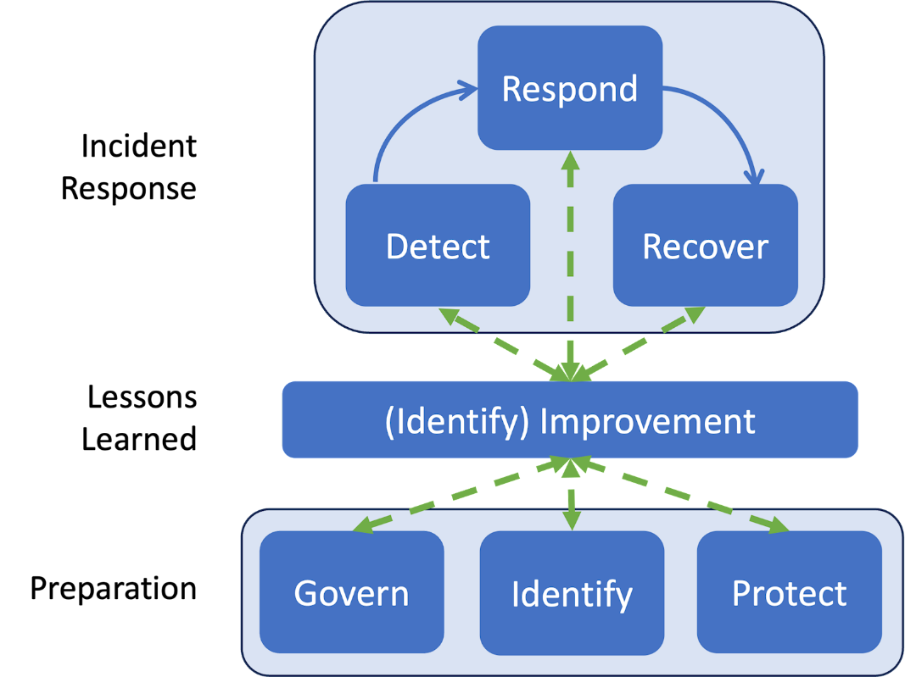
At the point this investigation picks up, the leak has already been noticed — an early detection. The next steps are to pin down the source of the leak, contain it, and improve the company's security posture to prevent a repeat.
Detection & Hands-On Investigation¶
Enabling Audit Policies¶
Before setting a trap, the IR team needed visibility. The first step was enabling the audit policies required to catch file access and removable-storage activity on the AD Domain Controller, each configured to log both successful and failed attempts:
- Audit File System — audits user attempts to access file system objects.
- Audit Removable Storage — audits user attempts to access file system objects on a removable device.
- Audit Detailed File Share — detailed logs for every user attempt to access shared files and folders.
- Audit File Share — logs for every attempt to access shared folders.
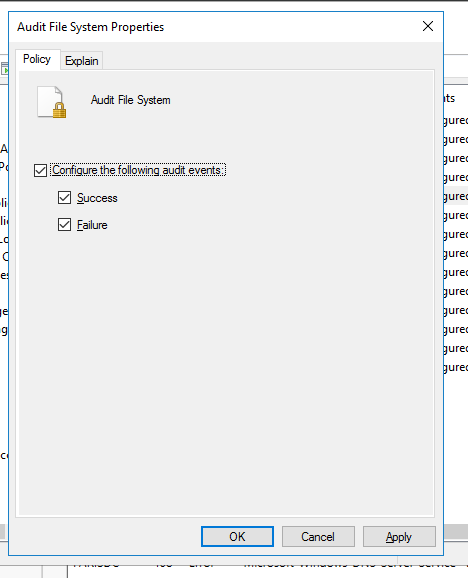
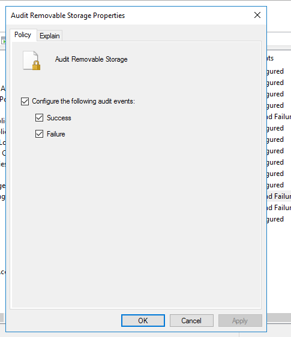
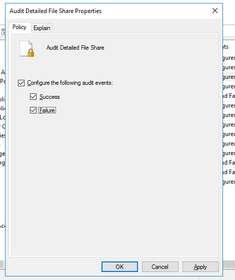
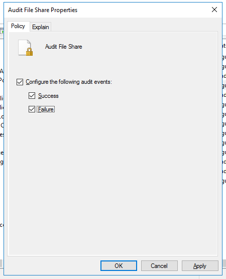
The Local Security Policy console confirms all four subcategories are now set to log Success and Failure.
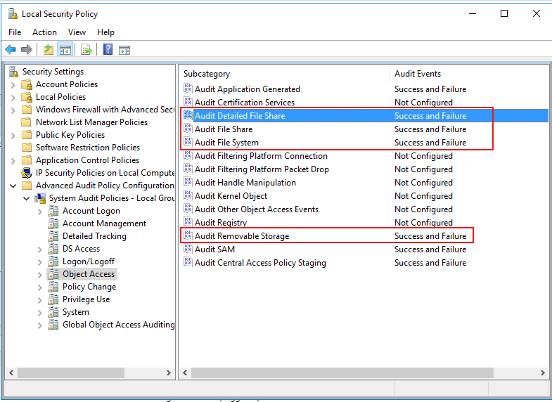
Planting the Honey File¶
With auditing in place, the IR team created a honey file named New Company Strategy and shared it with a handful of groups that exist in the company — Marketing, Sales, and SecOps — as bait for anyone browsing shares they shouldn't be touching.
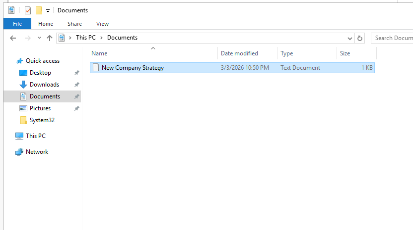
The file's auditing entries were set so that read/write access from each of these groups would be logged.
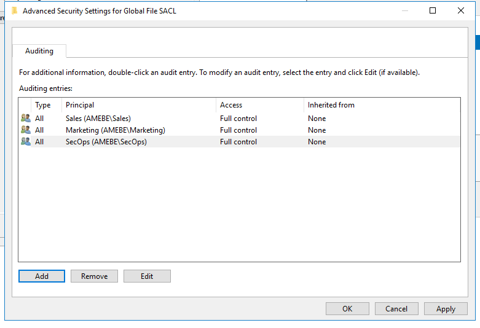
The IR team then shared the file with the Marketing and Sales groups over the network.
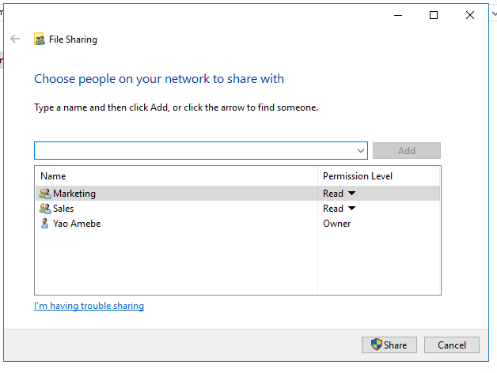
The file was shared successfully and made available at \\PARISDC\Users\yamebe\Documents\New Company Strategy.txt.
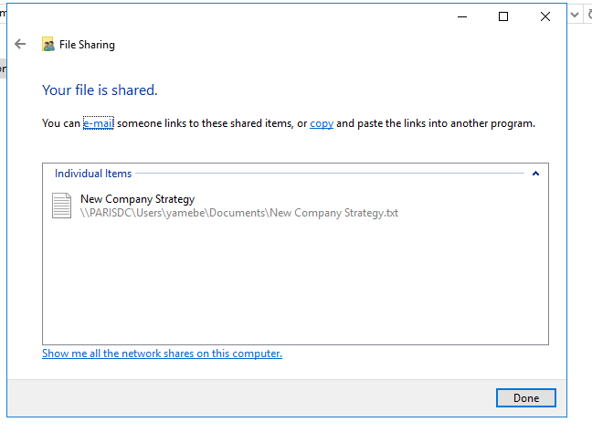
Insider Threat Actions¶
Shortly after, the honey file was accessed and exfiltrated. From another machine on the network, the file shows up under the shared Documents folder.
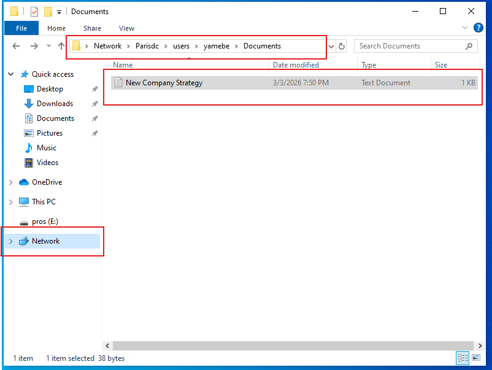
The insider then copied the file onto a USB flash drive (pros (E:)).
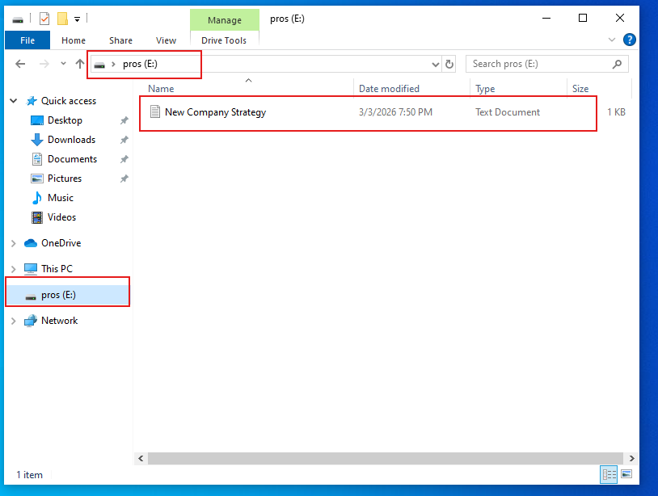
IR Team Investigation¶
With the bait taken, the IR team went back to the Security event log on the AD Domain Controller to trace what happened.
Event ID 5145 (Detailed File Share) shows AMEBE\banderson requesting read/write access to the srvsvc share around the time the honey file was accessed.
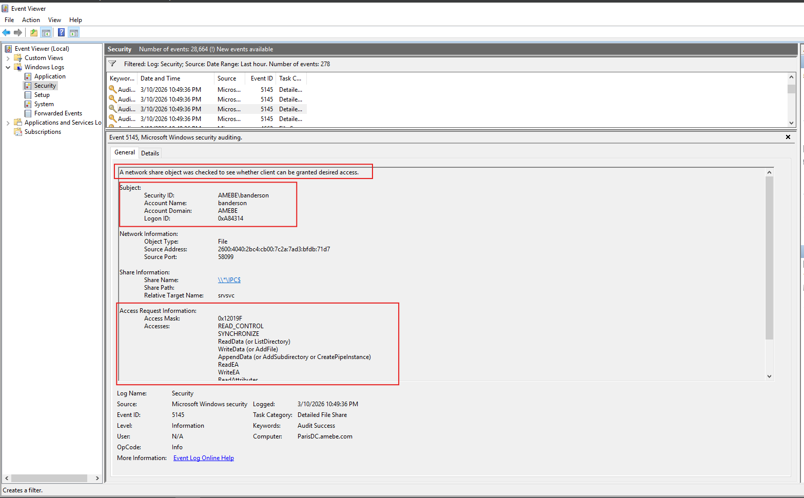
Event ID 4663 (File System) confirms the same account, banderson, directly accessing C:\Users\yamebe\Documents\New Company Strategy.txt.
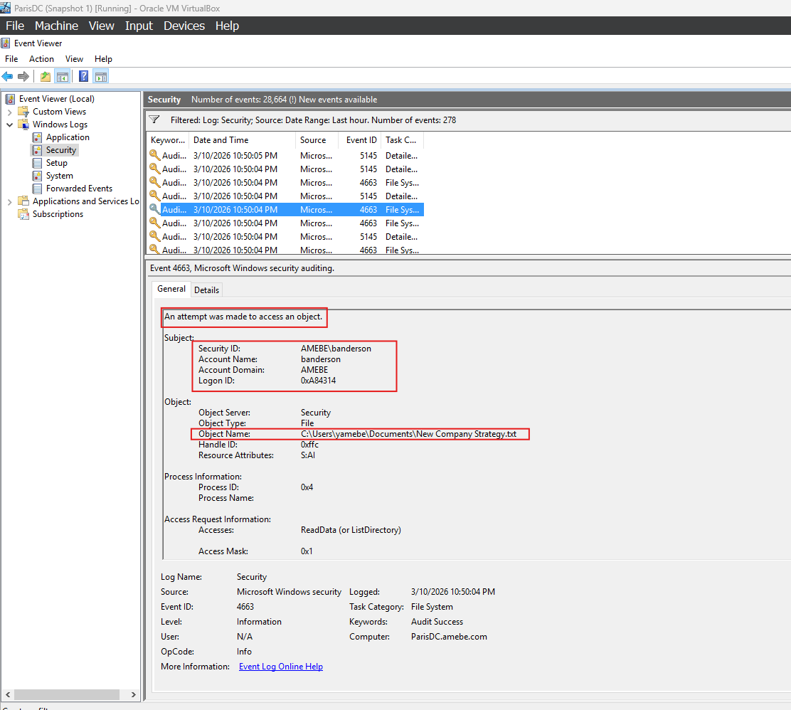
Event ID 6416 (Plug and Play) shows a USB flash disk being recognized by banderson's workstation around the same time — corroborating the earlier screenshot of the file being copied to drive E:.
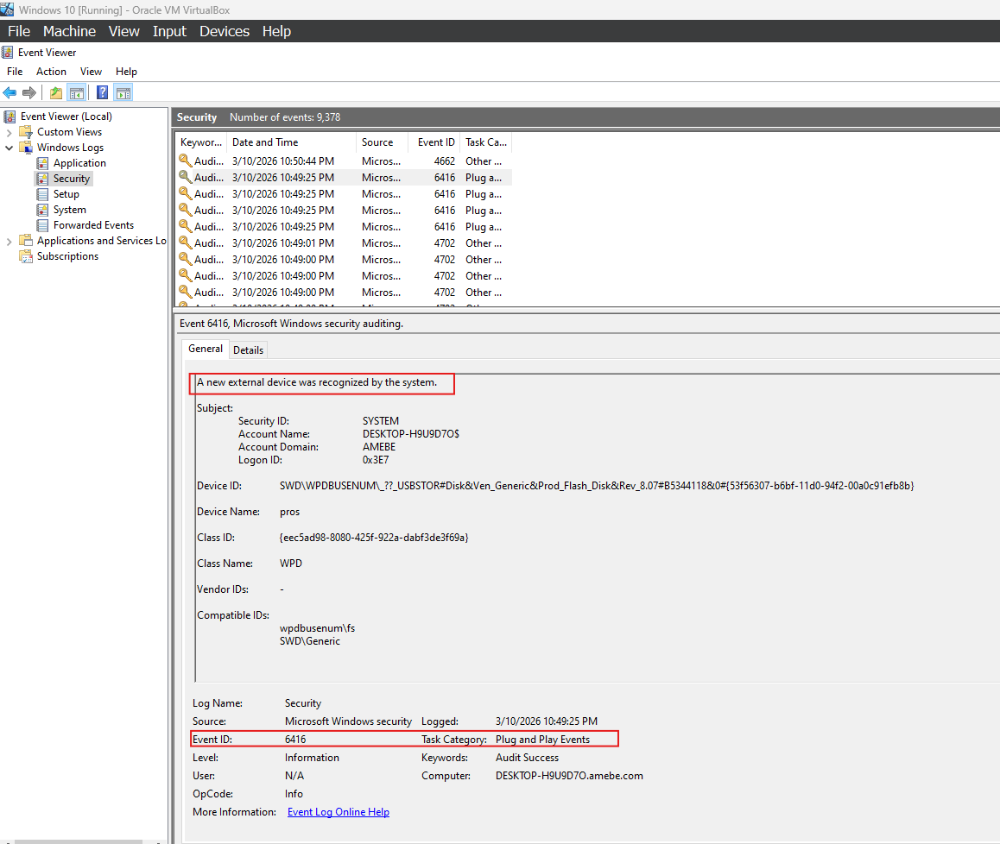
Useful reference: Windows Security Log Event ID 4663 and the Windows Security auditing documentation cover what each of these event IDs records.
IR Report¶
Correlating the file-share access (5145), the file-object access (4663), and the USB device connection (6416) — all tied to the same account and the same narrow time window — the investigation concludes that Broo Anderson (banderson) is the source of the leak: he was the only account to access the honey file, and he copied it to a USB flash drive shortly after.
Recovery and Remediation¶
The IR team's containment and remediation actions:
- Disabled Broo Anderson's account to immediately cut off further access.
- Enforced the principle of least privilege on company data going forward.
- Disabled write access to removable devices, to prevent this exfiltration path from being used again.
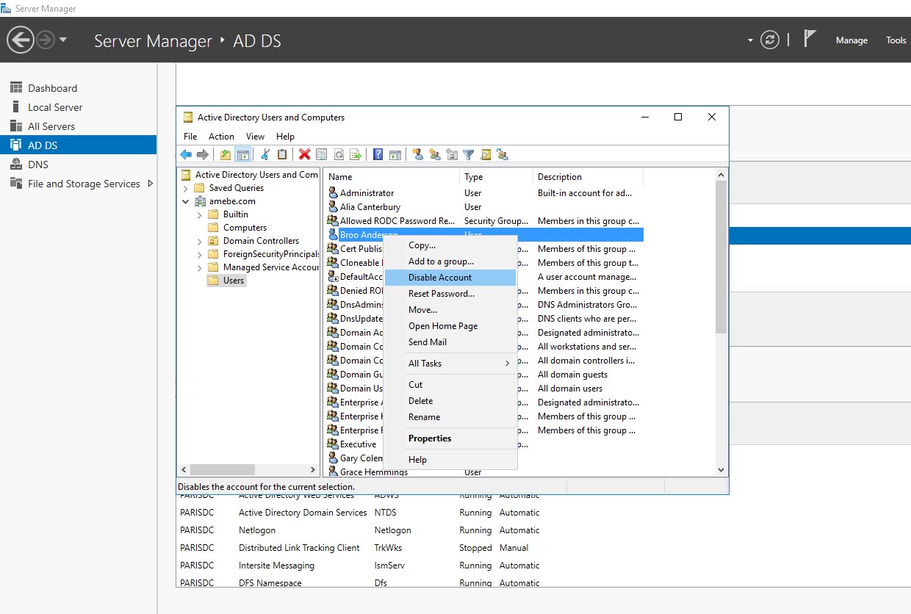
With the account disabled, Broo Anderson is no longer able to log in.
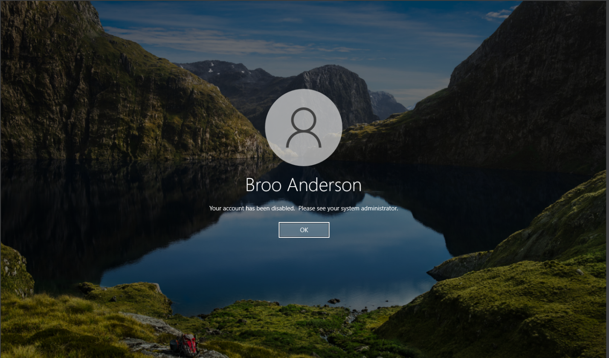
Lessons Learned¶
- Apply the principle of least privilege on sensitive data.
- Disable removable-drive write access by default.
- Keep file-access auditing on at all times, rather than enabling it only after a leak is suspected, for faster detection next time.
- Install log aggregation/SIEM tooling to make cross-event correlation faster and more accurate during an investigation.
Work Cited¶
Computer Security Division, Information Technology Laboratory. "Incident Response." CSRC, csrc.nist.gov/projects/incident-response. Accessed 8 Mar. 2026.
"Defining Insider Threats | CISA." CISA, www.cisa.gov/topics/physical-security/insider-threat-mitigation/defining-insider-threats. Accessed 8 Mar. 2026.
Simhadri, Manindra. "What Is Active Directory: Basics of Active Directory." Security Diaries, 18 Feb. 2021, securitydiaries.com/what-is-active-directory-basics-of-active-directory.